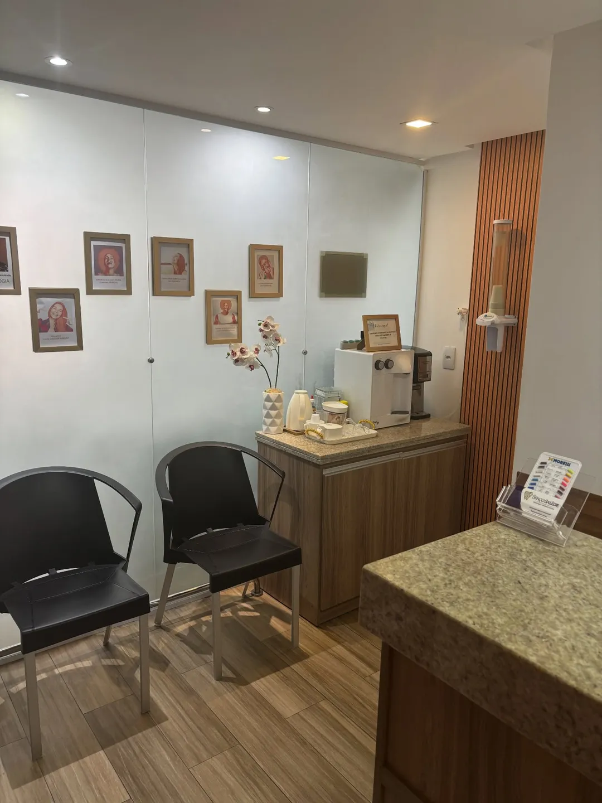

Ortodontia
Quando a mordida está em equilíbrio, todo o sistema pode funcionar de forma mais harmoniosa.
- Aparelhos ortodônticos
- Planejamento ortodôntico
- Ortodontia no tratamento do bruxismo, quando a mordida é uma das causas
Esboço da Hórus para a Spaço Saúde · página privada, fora do Google
Ortodontia, implante dentário e tratamento de bruxismo, DTM e ATM na Graça. A avaliação se marca pelo WhatsApp, com o assunto já dito.

O bruxismo nem sempre começa com uma dor intensa. Muitas vezes, ele deixa pequenos sinais. Marque o que você reconhece.
Quando a mordida está em equilíbrio, todo o sistema pode funcionar de forma mais harmoniosa.
Implante dentário não é apenas sobre repor um dente. A cirurgia é feita com anestesia e planejamento.
Cuidar não é apenas aliviar a dor. É entender por que ela está acontecendo.

Quem atende
“Dra., implante dói?” Essa é uma das perguntas que mais recebo.
Dra. Ângela Noronha
Ortodontista, CRO-BA 12600, à frente da clínica
A equipe da clínica reúne ortodontia, implantodontia, periodontia, endodontia, prótese, bucomaxilo e estética oral e facial.
[FALTA: formação da Dra. e nome e CRO de cada profissional da equipe]
Respondidas com o que a própria clínica já explicou nos posts.
A cirurgia é feita com anestesia e planejamento. Cada caso é único, e o primeiro passo é sempre a avaliação.
Nem sempre. Em muitos casos, dentes desalinhados, contatos inadequados durante a mordida e alterações na oclusão aumentam a sobrecarga sobre músculos e articulações, e aparecem como desgaste dentário, dor na face, dor de cabeça e apertamento.
Não. Com a mordida em equilíbrio, a ortodontia pode contribuir para reduzir a sobrecarga na ATM, prevenir desgastes e fraturas dentárias e melhorar a função mastigatória. Uma avaliação completa é o primeiro passo para entender como ela pode ajudar no seu caso.
A clínica atende particular e plano odontológico. Ao marcar, diga qual é o seu plano para a recepção confirmar.
Pelo WhatsApp (71) 99265-5288, pelo fixo (71) 3235-3247 ou pelo formulário no fim desta página, que abre o WhatsApp da clínica com a mensagem pronta.
No Centro Médico Centenário, sala 205, Rua Engenheiro Celso Torres, 654, na Graça, em Salvador.
Escolha o tratamento e a conversa abre no WhatsApp da clínica, com a mensagem pronta.